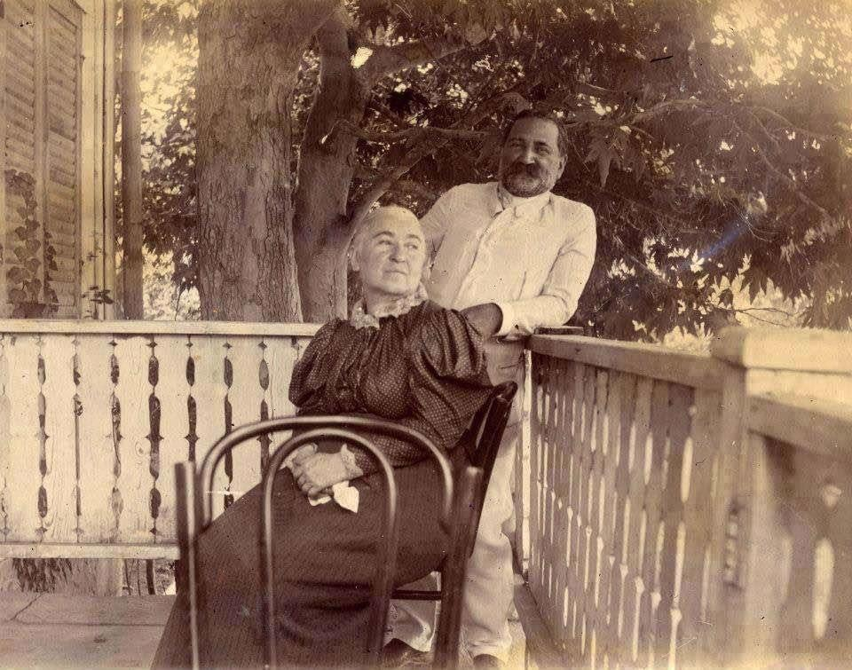

ილია ჭავჭავაძის და ოლღა გურამიშვილის სიყვარულის ისტორია არის განსაკუთრებული თავი ქართველი მწერლისა და საზოგადო მოღვაწის ცხოვრებაში, რომელიც გამოირჩევა სიწმინდით, ერთგულებით და ეროვნული მოღვაწეობისადმი ერთიანი მისწრაფებებით.
ოლღა გურამიშვილი - ილიას ცხოვრების მთავარი სიყვარული
ოლღა გურამიშვილი დაიბადა 1842 წელს. ის იყო თავადური ოჯახიდან, თუმცა მისი ოჯახი ცხოვრობდა საკმაოდ მოკრძალებულად. ოლღა გამოირჩეოდა განათლებით, ინტელექტით და ღირსებით, რაც მას განსაკუთრებულ პიროვნებად აყალიბებდა ილიასთვის.
ილია და ოლღა შეხვდნენ მაშინ, როდესაც ილია მოსკოვიდან დაბრუნდა საქართველოში 1860-იან წლებში. მათი გაცნობა მოხდა საერთო სამეგობროს საშუალებით.
ილია მაშინვე მოიხიბლა ოლღას სიმშვიდით, წრფელობით და იმ თვისებებით, რომლებიც ასახავდა იმ იდეალს, რომელსაც თავად ეძებდა.
ქორწინება და ოჯახური ცხოვრება
ილია ჭავჭავაძე და ოლღა გურამიშვილი დაქორწინდნენ 1863 წელს. მათი ქორწინება იყო არა მხოლოდ პირადი კავშირი, არამედ პარტნიორობა საერთო ეროვნული იდეალებისთვის ბრძოლაში.
ოლღას როლი ილიას ცხოვრებაში
ოლღა იყო ილიას ყველაზე დიდი მხარდაჭერა. იგი ეხმარებოდა ილიას არა მხოლოდ ოჯახური საქმეების მართვაში, არამედ იყო მისი საქმიანობის აქტიური მონაწილე:
ილიას პუბლიცისტური და საზოგადოებრივი საქმიანობის დროს ოლღა ხშირად მონაწილეობდა წერილების დაწერაში, სტატიების რედაქტირებაში და სხვა სამოღვაწეო საქმეებში.
ის იყო ილიასთვის მორალური მხარდაჭერის და სტაბილურობის წყარო.
შვილების არარსებობა
ილიასა და ოლღას არ ჰყავდათ შვილები, რაც მათთვის უდიდესი ტრაგედია იყო. თუმცა, მათ ეს განიცადეს სიმტკიცით და ერთად ცდილობდნენ დანაკლისის შევსებას ეროვნული მოღვაწეობით.
სიყვარულის სიმბოლიკა
ილია ჭავჭავაძის ზოგიერთი ლექსი და პროზაული ნაწარმოები აღბეჭდილია ოლღასადმი მისი სიყვარულით.
მაგალითად:
„ჩემი თხოვნა“ - ერთ-ერთი ცნობილი პოეზია, სადაც ილია ასახავს მის სულიერ ურთიერთობას და სიყმაწვილესთან დაკავშირებულ ოცნებებს, რომლებიც შეიძლება ოლღასაც მიეძღვნა.
მისი პირადი წერილები ხშირად შეიცავდა ნაზ და სიღრმისეულ გამოსახულებებს ოლღას მიმართ.
ტრაგიკული დასასრული და ოლღას ერთგულება
1907 წელს, ილია ჭავჭავაძის ტრაგიკულმა მკვლელობამ სრულიად შეცვალა ოლღას ცხოვრება. ის დარჩა მარტო, მაგრამ ბოლომდე ინარჩუნებდა ილიას იდეალების ერთგულებას. ოლღამ გააგრძელა ილიას მემკვიდრეობის დაცვა და ხალხისგან მის ხსოვნის პატივისცემა.
ოლღას სიტყვები ილიას მკვლელობის შემდეგ:
ოლღა აცხადებდა, რომ მისი სიცოცხლე დასრულდა იმ დღეს, როცა ილია მოკლეს. ის დარჩა ილიას იდეალების და მისი მოღვაწეობის ერთგული მცველი.